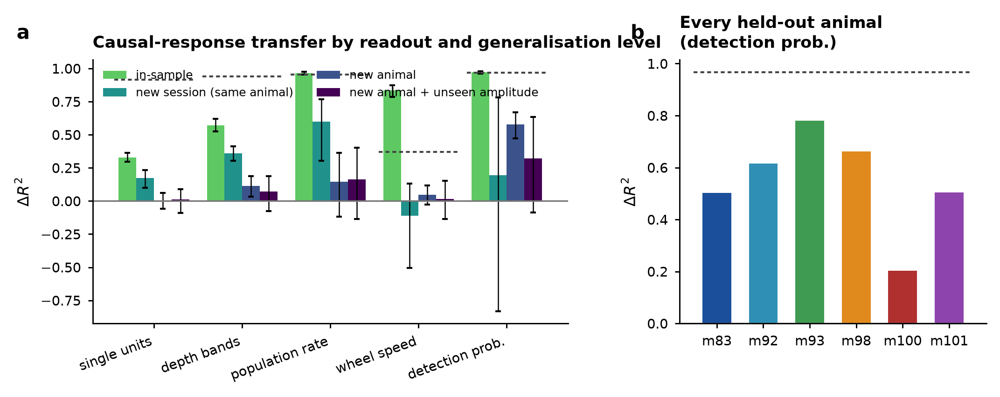

Latent neural dynamics look alike across individuals doing the same thing, and many methods now align recordings across animals into a shared representation. Those results are descriptive: they say observed activity occupies a common geometry. They do not say that different individuals share a common causal operator — that the same physical intervention would move each brain the same way.
We turn that stronger claim into a prediction problem with a hard protocol:
After observing only normal, unperturbed activity from a new animal, predict the full time-resolved neural and behavioural response to an intervention that animal has never received.
No intervention trial from the held-out animal is used at any point — not its spikes, not its behaviour, not even its pre-stimulus window. Only the intervention parameters, which the experimenter chooses, are known in advance.
The answer depends on granularity
ΔR² = 0 is exactly the model that asserts the intervention has no
effect; 1 is perfect. Every row is leave-one-animal-out with a split-half
noise ceiling for the same readout.
| readout | in-sample | new session | new animal | new animal + unseen amplitude | ceiling |
|---|---|---|---|---|---|
| single units | +0.329 | +0.172 | +0.003 | +0.011 | 0.914 |
| depth bands | +0.572 | +0.359 | +0.115 | +0.072 | 0.938 |
| population rate | +0.965 | +0.598 | +0.147 | +0.164 | 0.953 |
| wheel speed | +0.833 | −0.113 | +0.045 | +0.016 | 0.370 |
| detection probability | +0.970 | +0.194 | +0.577 | +0.321 | 0.968 |


Why single units fail — and it is not the causal operator
The model factorises the dynamics into a species-invariant part and an individual part:
yt(i) = Poisson( softplus( Ci zt + bi ) )
bt = Dshared(zt)
Proposition. Fix F and G. If a new animal's
unperturbed law is matched by two different parameterisations, they differ by some
T in the symmetry group
Sym(F) = {T : T F(z,u) = F(Tz,u) ∀ z,u}, and their predicted
intervention responses differ by C T⁻¹(T G(Tz)a − G(z)a).
So the prediction is unique iff Sym(F) is trivial, and otherwise
ambiguous by exactly that group.
Spontaneous cortical activity sits near a fixed point, where the flow is weak and nearly isotropic — effectively the degenerate case. That predicts difficulty exactly where we measure it. Two independent lines of evidence confirm the diagnosis:
- Refitting only the readout with intervention data (an oracle that changes nothing about the shared operator) recovers much of the unit-level accuracy, while calibrating the same readout on spontaneous activity does not. The operator transfers; the neuron-to-latent map does not.
- The microstimulation effect is spatially diffuse. Pooled over all sessions, the correlation between a unit's distance from the stimulating contact and its response is −0.01 — there is no peak at the electrode. Low-amplitude ICMS recruits a sparse, distributed, implant-specific set of neurons, so there is no conserved neuron-level spatial rule to learn.
Four qualitatively different models — a latent hierarchical model, an observed-space linear-response (fluctuation–response) model, a physical-feature encoding model, and a manifold-alignment group average — all plateau at r ≈ 0.28 across animals, while reaching ΔR² = 0.33 within a session.

What makes this measurable
- Validated noise ceilings. The split-half estimator is tested against simulations with known signal and noise across six noise/trial-count regimes (agreement within 0.06).
- Covariate-matched unperturbed data. Trials are delivered under a quiescence criterion, so uniformly sampled inter-trial windows carry up to 3× the pre-stimulus population rate — which would bias every measured effect, because predictions draw initial conditions from unperturbed trials. Candidates are matched to stimulation trials on a joint quantile grid of pre-stimulus rate and wheel speed, then mean-trimmed; sessions with residual mismatch >1.25× are excluded. The audit reports 0 remaining problems.
- Leakage audit on every session: the intervention gate must be identically zero before the alignment index and on all unperturbed trials.
- Bit-for-bit reproducible. Seeds use
zlib.crc32, not Python's per-process-saltedhash; two independent builds agree exactly. - Negative controls (permuted unit identities, scrambled intervention labels) and an oracle upper bound, in every fold.
- Numbers cannot drift: every figure quoted in the paper is emitted as a LaTeX macro straight from the result JSONs.
Reproduce it
git clone https://github.com/aaravsinhaofficial/cross-animal-perturbation-transfer
cd cross-animal-perturbation-transfer
uv venv --python 3.12 .venv
VIRTUAL_ENV=.venv uv pip install --python .venv/bin/python -e . numpy scipy matplotlib \
scikit-learn pandas h5py pynwb pyyaml seaborn statsmodels tqdm
.venv/bin/python scripts/download_dandi.py --out data/raw/dandi001868 # 7.5 GB, CC-BY-4.0
.venv/bin/python scripts/build_icms_cache.py # tensors + leakage audit
.venv/bin/python scripts/run_icms_ladder.py # the results table
.venv/bin/python scripts/make_figures.pyLimitations
One species, one task, one perturbation modality; cross-species transfer is a much harder extension we do not attempt. Six animals bound the precision of the confidence intervals, and the per-animal spread is substantial. Simultaneously recorded populations are small (8–33 units) — our diagnosis predicts that unit-level transfer should improve with population size, which is the sharp, testable consequence of this work. Electrical microstimulation is coarse and not cell-type-specific.